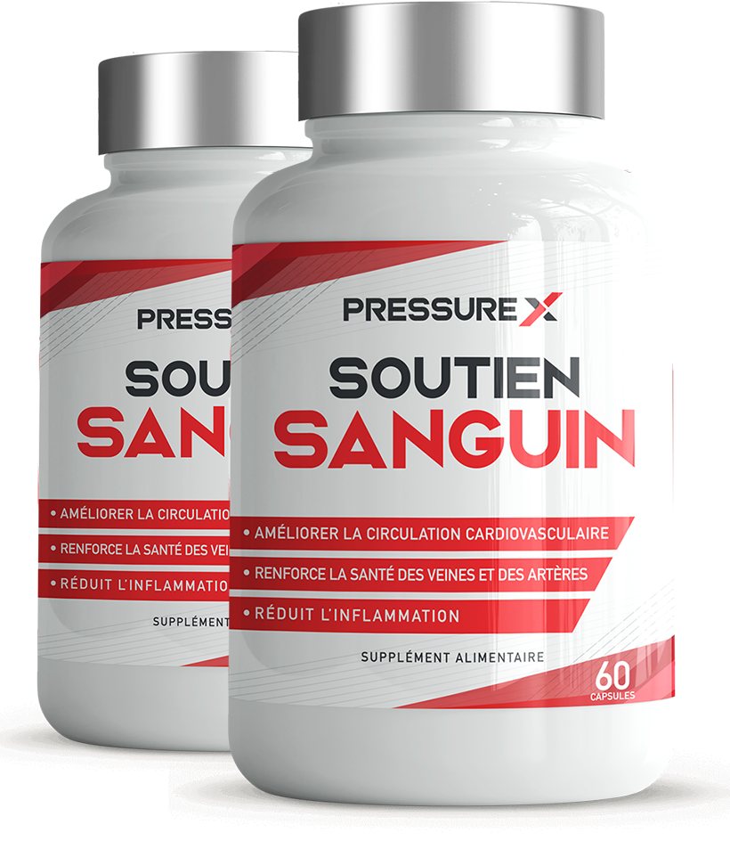

Après un tel nettoyage vasculaire, les personnes âgées se débarrassent enfin de l'hypertension artérielle et de neuf autres maladies soi-disant "incurables" !
Le Dr. Oz est l'un des cardiologues et professeurs les plus importants des États-Unis. Il est connu pour traiter les gens sans médicaments. Pour guérir les maladies liées aux vaisseaux sanguins, toutes les célébrités se démènent pour obtenir une consultation de sa part. Cela inclut des patients de France, d'Allemagne, de Grande-Bretagne et d'autres pays - ils vont tous directement vers lui. Il a écrit 32 livres scientifiques, et il y a trois fois plus de publications scientifiques dans des revues dans son arsenal professionnel. Le Dr. Oz est également connu pour ses nombreuses apparitions à la télévision sur des questions de santé.

Le Dr. Oz donne rarement des interviews et essaie de consacrer plus de temps à ses patients. Cependant, le correspondant de notre station a eu de la chance - le célèbre médecin a accepté de répondre à plusieurs questions pour ces patients qui n'ont pas la possibilité de s'inscrire dans sa clinique.
Le Dr. Oz EST SÛR QUE ABSOLUMENT TOUT LE MONDE PEUT NETTOYER SES PROPRES VAISSEAUX ET AMÉLIORER AINSI SA SANTÉ ET SON BIEN-ÊTRE. Un tel nettoyage aide à se débarrasser des fluctuations de la pression artérielle et à guérir 9 maladies chroniques.
Comment effectuer un nettoyage vasculaire, le médecin l'a décrit ci-dessous. De plus, l'article d'aujourd'hui abordera les sujets suivants:
- Pour atteindre l'âge de 120 ans sans prendre de comprimés est possible !
- Pourquoi les vaisseaux sanguins obstrués entraînent des maladies chroniques incurables
- Signes cachés et évidents de vaisseaux sanguins obstrués
- MÉTHODES MODERNES POUR LE TRAITEMENT DE L'HYPERTENSION LIÉE À L'ÂGE SANS COMPRIMÉS
Les vaisseaux sanguins obstrués - un tueur terrible !
Dr. Oz:
- Je vais vous donner quelques informations que j'espère vous feront réfléchir !
La cause de décès la plus courante est la MALADIE DU CIRCUIT CARDIAQUE, et la principale cause de son occurrence est le CHOLESTÉROL. Le cholestérol est donc la substance la plus dangereuse au monde. Cette substance tue plus de personnes que l'alcool, la nicotine et les drogues combinés.
Dans 94% des cas, le cholestérol provoque la mort avant l'âge de 80 ans.
Le cholestérol détruit la santé. S'il ne s'accumulait pas dans nos vaisseaux sanguins, nous pourrions tous facilement vivre jusqu'à l'âge de 120 ans.
À quoi ressemble le cholestérol et qu'est-ce que c'est ? Je ne donnerai pas ici une description de cette substance telle qu'elle est décrite dans les manuels médicaux. Je décrirai tout en termes simples. Imaginez de la graisse froide laissée dans une poêle qui n'a pas été lavée après le dîner. C'est à cela que ressemble le cholestérol.
Cette substance se dépose sur les parois des vaisseaux sanguins. D'abord avec un petit revêtement (20-25 ans), puis la couche de cholestérol commence à croître de plus en plus rapidement (25-40 ans), car de plus en plus de particules se collent à la couche collante. Par conséquent, à l'âge de 40 ans, le cholestérol diminue presque de moitié la lumière dans les vaisseaux. En réponse, le cœur n'a d'autre choix que d'augmenter la pression sanguine. Mais même cela n'est pas si dangereux !
Il est beaucoup plus dangereux que le cholestérol obstrue complètement les petits vaisseaux. En raison de la détérioration de l'apport sanguin, des processus pathologiques se produisent dans les organes internes. Et cela conduit à son tour à des maladies chroniques.
Tout d'abord, il y a des douleurs à l'estomac, puis des douleurs à la rate, et quelque temps plus tard, il y a aussi une sténose du foie et du pancréas. Cela conduit généralement à une détérioration drastique de la santé humaine. Le plus souvent, ce processus est déclenché par le cholestérol.
 Cholestérol. À l'âge de 50 à 60 ans, une personne accumule jusqu'à 3,5 kg de cette substance dangereuse !
Cholestérol. À l'âge de 50 à 60 ans, une personne accumule jusqu'à 3,5 kg de cette substance dangereuse !
Cela dépend de l'état des vaisseaux sanguins dans le corps. Si les vaisseaux des jambes se bouchent, cela conduit à des varices, à des œdèmes persistants et à une sensation constante de lourdeur dans les jambes. Lorsque cela se produit dans le foie, cela entraîne une hépatose et une cirrhose. Si les vaisseaux dans les articulations se bouchent, cela entraînera de l'arthrite et de l'ostéoarthrite ou des douleurs dans la colonne vertébrale, et si les vaisseaux dans les yeux se bouchent, cela peut même conduire à la cécité.
Vous ne pouvez pas éviter la contamination vasculaire ! Le cholestérol s'accumule dans les vaisseaux de chaque personne. Les vaisseaux contaminés sont également la raison du vieillissement rapide.
LE CHOLESTÉROL, DE TOUTES CHOSES, DÉCLENCHE UNE RÉACTION EN CHAÎNE DU VIEILLISSEMENT DANS LE CORPS. De toutes choses, la pollution vasculaire raccourcit la vie d'une personne.
Au lieu de vivre jusqu'à 120 ans (c'est pour cela que les organes du corps humain sont conçus), certains ne vivent même pas au-delà de 70 ans ! Au lieu de vivre jusqu'à 120 ans (c'est pour cela que les organes du corps humain sont conçus), certains ne vivent même pas au-delà de 70 ans !
Le cholestérol n'est pas la seule raison - Ces substances polluent également vos vaisseaux sanguins !
Dr. Oz:
Le cholestérol - n'est pas si mauvais pour l'instant. Il y a d'autres substances qui s'accumulent dans les vaisseaux !
Thrombus mass
Si le cholestérol ressemble à de la graisse, la masse de thrombus (thrombi) ressemble à du caillé. Les caillots sanguins se forment sur les parois internes des vaisseaux sanguins. Les caillots sanguins sont encore plus dangereux que le cholestérol. Le caillot sanguin peut se détacher de la paroi du vaisseau à tout moment et se déplacer vers le cœur ou le cerveau, provoquant une crise cardiaque ou un accident vasculaire cérébral. Les deux maladies sont mortelles et ont une très forte probabilité de se terminer par la mort ou un handicap.
Plus une personne vieillit, plus le risque qu'un caillot sanguin se détache est élevé. C'est précisément pourquoi les personnes âgées meurent si souvent d'accidents vasculaires cérébraux ou de crises cardiaques.
Calcium crystals
Il s'agit de sels de métaux lourds, de mercure et de divers produits chimiques qui se sont accumulés tout au long de la vie. Par exemple, si une personne travaille dans une installation de production dangereuse, de nombreux dépôts de ce type peuvent s'accumuler. Compte tenu de la situation environnementale actuelle, le calcium s'accumule en chacun de nous. Ces substances, comme cela a déjà été prouvé, conduisent au CANCER. Elles contribuent donc à une division cellulaire anormale, ce qui conduit à l'oncologie.
Près de 98 % de tous les décès par cancer présentent des niveaux élevés de dépôts de cristaux dans le sang. Nous savons tous que le mercure est nocif. Avec une grande accumulation de cristaux de calcium, même le sang devient nocif.
 À l'âge de 50 ans, les vaisseaux sanguins dans tout le corps se bouchent. Plus les vaisseaux sont contaminés, plus vous avez de maladies chroniques et plus les processus de vieillissement sont rapides!
À l'âge de 50 ans, les vaisseaux sanguins dans tout le corps se bouchent. Plus les vaisseaux sont contaminés, plus vous avez de maladies chroniques et plus les processus de vieillissement sont rapides!
Examinez-vous ! À quel point vos vaisseaux sanguins sont-ils obstrués et quel est le risque de décès précoce !
Dr. Oz:
Si vous n'avez jamais nettoyé vos vaisseaux et que vous avez plus de 50 ans, vous avez certainement des vaisseaux sanguins obstrués. Dès que vous les nettoyez, VOUS SENTIREZ IMMÉDIATEMENT UN EFFET.
Symptômes des vaisseaux obstrués :
- Gonflement le matin
- Bruit dans les oreilles
- Mouches volantes devant les yeux
- Douleurs articulaires
- Vertiges
- Insomnie la nuit et somnolence pendant la journée
- Fatigue constante
- Troubles visuels
- Troubles de la mémoire
- Varices
- Essoufflement
- Problèmes gastro-intestinaux courants
- Problèmes de surpoids
Vous affirmez que le nettoyage vasculaire peut prolonger la vie des personnes âgées et stabiliser la tension artérielle ?
Dr. Oz:
- Je sais. Actuellement, nous prescrivons systématiquement un nettoyage vasculaire à tous nos patients de plus de 50 ans (certains de plus de 40 ans). Seulement après le nettoyage vasculaire, nous examinons ce que nous pouvons faire ensuite. Chez environ 9 personnes sur 10, après un nettoyage vasculaire, la tension artérielle redevient normale et ne nécessite pas de traitement supplémentaire.
En d'autres termes, vous n'avez plus besoin de prendre des pilules pour stabiliser la tension artérielle. Tout ce que vous avez à faire, c'est nettoyer les vaisseaux sanguins. Même si la tension artérielle élevée ne disparaît pas complètement (parfois cela arrive), vous vous sentirez quand même beaucoup mieux.
Malheureusement, cette méthode simple de normalisation de la tension artérielle est cachée par des médecins corrompus et des entreprises pharmaceutiques, pour qui il est avantageux de traiter pendant longtemps et de dépenser beaucoup d'argent. Car plus une personne est malade longtemps, plus elle dépensera d'argent pour des médicaments. Et le nettoyage vasculaire est simple, peu coûteux et permet aux gens de se remettre rapidement sur pied.
Un retraité américain a été guéri de l'hypertension artérielle grâce à un nettoyage vasculaire. Et il y a beaucoup de gens comme ça...
Je voudrais vous montrer une lettre de Heidi Farmer, une retraitée américaine. Les médecins d'une clinique locale lui ont dit qu'il ne lui restait plus beaucoup de temps à vivre. Mais ses proches ont continué à se battre pour elle. La vieille dame ne pouvait pas nous rendre visite en personne. Sa fille a appelé notre clinique et nous a demandé de l'aide. Dans le même temps, je ne peux même pas poser de diagnostic de cette manière. Nous lui avons simplement recommandé de nettoyer les vaisseaux.
Trois mois plus tard, la femme nous a déjà écrit elle-même ! Je voudrais vous montrer sa lettre.
 Heidi Farmer, 75 ans. Retraitée américaine souffrant d'hypertension artérielle et de nombreuses autres maladies. Elle vient de Schwaz.
Heidi Farmer, 75 ans. Retraitée américaine souffrant d'hypertension artérielle et de nombreuses autres maladies. Elle vient de Schwaz.
"Merci infiniment de m'avoir redonné la VIE. Quand ma fille vous a écrit, j'étais presque inconsciente. Le brouillard dans ma tête dû à l'hypertension artérielle ne disparaissait même pas avec l'aide des pilules. J'étais dans un état pré-infarctus. Je n'ai même pas été admise à l'hôpital, ma fille s'est vue dire de me préparer une place au cimetière déjà. Cependant, ma fille a décidé de vous appeler. Ensuite, elle a commencé à me donner le médicament que vous avez prescrit. Heureusement, la maladie a de nouveau disparu. Pendant ce temps, ma tension artérielle s'est complètement normalisée. La semaine dernière, je suis même allée à l'hôpital pour faire des analyses. On m'a dit que j'étais assez en bonne santé pour mon âge. Et il y a quelques mois, j'avais déjà un pied dans la tombe. J'espère avoir encore quelques années devant moi. Merci beaucoup pour votre aide et de m'avoir sauvée.".
UN TEL MIRACLE PEUT SE PRODUIRE APRÈS UN NETTOYAGE VASCULAIRE. Bien que ce ne soit pas du tout un miracle - tout peut être expliqué.
Méthode de nettoyage des vaisseaux pour les personnes âgées et les patients hypertendus.
Dr. Oz:
- Aujourd'hui, il n'y a qu'un seul médicament aux États-Unis qui fait bien ce travail. Il s'appelle Pressure X Soutien Sabguin. Ce médicament a été développé en 2015 par l'Institut américain de la santé et contient environ 40 ingrédients actifs - extraits de plantes bénéfiques pour les vaisseaux sanguins, vitamines, micro et macro-éléments.
Le composant le plus important de "Pressure X Soutien Sabguin" sont les "MOLECULES ACIDES ACTIVES" - elles sont capables de dissoudre la pollution accumulée dans les vaisseaux, telle que le cholestérol, la masse de thrombus et les cristaux de calcium.
Les "molécules d'oxygène actif" ont été découvertes par des scientifiques japonais aussi récemment qu'en 2007. Deux scientifiques japonais ont été récompensés par le prix Nobel pour leurs recherches dans ce domaine. Aujourd'hui, les "molécules d'oxygène actif" sont activement utilisées dans la médecine mondiale.
Les Japonais ont commencé à accorder de plus en plus d'attention au nettoyage des vaisseaux sanguins après l'âge de 40 ans aussi tard qu'en 1965, lorsque le Programme national de santé et de longévité a été adopté. Le nettoyage des vaisseaux sanguins joue un rôle important dans cette loi. Et aujourd'hui, nous voyons le résultat d'une telle décision. Aujourd'hui, le Japon est un pays avec l'espérance de vie la plus élevée. 100 ans n'est pas du tout un défi pour les Japonais. Et s'ils avaient l'habitude de nettoyer leurs vaisseaux avec des herbes, du sport et du yoga, maintenant ils utilisent des médicaments spéciaux à base de molécules d'oxygène actif.
Pendant combien de temps devez-vous prendre Pressure X Soutien Sabguin pour nettoyer les vaisseaux ?
En moyenne, la durée de la prise est de 2 à 4 semaines. Cependant, tout cela est purement individuel et dépend du bien-être.
Voici ce que Pressure X Soutien Sabguin fait à votre corps pendant, ainsi que quelques mois après, le nettoyage de vos vaisseaux.
Nettoie et répare les vaisseaux.
En raison des "molécules d'oxygène actif" Pressure X Soutien Sabguin dissout les dépôts de cholestérol, les caillots sanguins et les dépôts de calcium. Grâce à l'extrait de Ginkgo Biloba, le médicament augmente également le tonus vasculaire et restaure l'élasticité des vaisseaux. Après une prise mensuelle, les données de recherche montrent que les vaisseaux deviennent aussi propres et élastiques que chez les jeunes âgés de 25 à 30 ans. Il y a une restauration des petits capillaires. Cela conduit à son tour à la normalisation de la tension artérielle, à la disparition de la faiblesse, de la somnolence et des maladies. De plus, vous gagnez beaucoup plus de force et d'énergie.
Restaure les organes internes et les articulations
Après le nettoyage vasculaire, la restauration des organes internes commence. Heureusement, la nature a une propriété telle que la régénération cellulaire. En conséquence, de nombreuses maladies disparaissent. Par exemple, si vous aviez des douleurs au pancréas ou à la rate, elles disparaîtront. Le nettoyage vasculaire aide souvent même contre des maladies telles que les ulcères de l'estomac et du duodénum. De plus, les articulations sont également restaurées. Les craquements et les grincements dans les articulations disparaîtront. Même par mauvais temps, vous n'aurez plus de douleurs articulaires. La mobilité des articulations est également améliorée.
Fait fondre l'excès de graisse
Le surpoids aggrave l'état des patients hypertendus de 4 à 5 fois. Plus le poids est élevé, plus le stress sur les vaisseaux, le cœur et les articulations est important. Les vaisseaux obstrués sont souvent la cause de la prise de poids car le glucose ne peut pas être éliminé des tissus en quantité suffisante. Après le nettoyage vasculaire, le poids commence automatiquement à diminuer. De plus, Pressure X Soutien Sabguin contient un extrait de venin d'abeille qui accélère la perte de graisse. En moyenne, on perd 8 à 12 kg par mois après le nettoyage vasculaire.
Restaure la vision et les performances de la mémoire
Pressure X Soutien Sabguin contient un extrait de jeunes cônes de mélèze, capable de restaurer les microvaisseaux du fond d'œil. De cette manière, la vision est progressivement restaurée. Beaucoup de gens commencent à voir comme s'ils lisaient les numéros de bus de loin et peuvent même enfiler à nouveau une aiguille. Les vaisseaux sont complètement restaurés dans les yeux. Ceux qui ont des vaisseaux propres ont toujours une bonne vision ! Tous les ophtalmologistes le savent.
Restaure la puissance chez les hommes !
L'une des conséquences étonnantes du nettoyage vasculaire est que chez les hommes, l'hormone testostérone est à nouveau produite. La prostatite et l'adénome de la prostate disparaissent. De plus, la puissance est également augmentée. Donc, si vous avez moins de 70 ans, vous pouvez à nouveau avoir des rapports sexuels.
Effet papillon pour les personnes âgées et les patients hypertendus
L'action de Pressure X Soutien Sabguin ressemble à un battement d'aile de papillon, qui provoque une réaction en chaîne pour améliorer les organes internes et le bien-être. En commençant par la normalisation des vaisseaux sanguins et en finissant par la restauration de la vision et des articulations.
1 à 3 mois après le nettoyage vasculaire, c'est comme une renaissance. En même temps, les patients ressentent des améliorations significatives chaque semaine.
Réveil en douceur
Vous vous réveillerez le matin et sortirez du lit facilement - vous n'aurez plus besoin de vous forcer à le faire. Vous serez plein d'énergie et de force.
Excellent bien-être et humeur
Du matin et pendant toute la journée. Vous pouvez à nouveau bien dormir. Vous vous sentirez jeune à nouveau. Vous n'avez plus besoin d'aller aux toilettes tout le temps la nuit et vous n'avez plus de douleur.
Délicieux petit-déjeuner
Votre menu s'élargira. Vous n'aurez plus besoin de suivre des régimes stricts. Si vous mangez quelque chose de mal, vous n'aurez plus de brûlures d'estomac.
Puissance géante
Quand vous sortirez de la maison, vous n'aurez plus à vous soucier de vos jambes. Vous ne percevrez plus la marche comme un fardeau et vos jambes ne se fatigueront ni ne gonfleront plus. Fini l'essoufflement et les maux de tête. Vous pourrez même travailler dans le jardin.
Silence absolu
Vous serez à nouveau calme et détendu. Vous n'aurez plus de douleur constante et aurez désormais l'occasion de penser à autre chose. Quand rien ne fait mal, les choses familières, les sons et les odeurs joueront avec de nouvelles couleurs, depuis longtemps oubliées.
Vous commencez à voir parfaitement
Même une vision gravement endommagée commence progressivement à s'améliorer. Tout ce que vous aviez l'habitude de voir leur semblera beaucoup plus clair. Vous pourrez à nouveau voir les numéros de bus et admirer la nature.
Et maintenant, la chose la plus importante - VOUS POURREZ VIVRE SANS MÉDICAMENTS. Oubliez les médicaments qui abaissent la tension artérielle. Ce sera une chose du passé car la tension artérielle cessera de fluctuer !
Pénurie de Pressure X Soutien Sabguin dans les pharmacies américaines !
Autant que nous le sachions, il est extrêmement difficile d'acheter Pressure X Soutien Sabguin dans les pharmacies. Ce médicament est rarement disponible. Est-ce vrai ? Et que pouvez-vous recommander aux citoyens américains ?
- Oui, c'est en effet le cas. Pressure X Soutien Sabguin est produit en quantités limitées et n'a donc tout simplement pas atteint les pharmacies. La plupart est malheureusement vendue à l'étranger et une partie est achetée par des cliniques privées.
Par conséquent, il est vraiment difficile pour les gens ordinaires de se procurer Pressure X Soutien Sabguin. ACTUELLEMENT, CE MÉDICAMENT PEUT ÊTRE ACHETÉ DANS NOTRE CLINIQUE. À cette fin, vous pouvez laisser une demande sur notre site web. Nous avons décidé de vendre une petite quantité de ce médicament via notre site web. Comme il s'agit d'une petite quantité, ce n'est pas suffisant pour tout le monde. C'est suffisant pour ceux qui laissent une demande en premier.
Pressure X Soutien Sabguin Conditions de commande:
- Prise en charge d'un transport mondial rapide. Nous expédions Pressure X Soutien Sabguin à l'étranger.
- Pressure X Soutien Sabguin doit être commandé exclusivement pour un usage personnel. Je demande à tous les revendeurs de laisser ce médicament aux gens ordinaires ! Voler les personnes âgées est inhumain !
- Vous pouvez commander Pressure X Soutien Sabguin sur le site officiel
Pour participer à notre programme, vous devez cliquer sur le bouton "Tourner" sous le tambour avec des remises. Selon ce que vous obtenez, vous pouvez obtenir Pressure X Soutien Sabguin une remise. Vous ne pouvez faire tourner le tambour qu'une seule fois.
Saisissez cette chance avant que les autres ne le fassent !
Comme mentionné précédemment, malheureusement, nous n'avons pas ce médicament en quantités suffisantes pour tous les patients hypertendus et les personnes âgées aux États-Unis. Pour cette raison, nous avons décidé de le rendre disponible à ceux qui passent une commande sur le site Web plus rapidement que les autres. Donc, si vous souhaitez améliorer la santé de votre corps et abaisser votre tension artérielle grâce à un nettoyage approfondi des vaisseaux sanguins, je vous recommande de commander le médicament dès que possible - tant qu'il est encore disponible !
Attention. Pressure X Soutien Sabguin s'épuise rapidement !
Le nombre de paquets disponibles diminue rapidement !
Est actuellement disponible:
12 pièce
Dès que vous cliquez sur le bouton "Tourner", Pressure X Soutien Sabguin vous sera réservé.
 Tourner
Tourner
Pressure X Soutien Sabguin a été réservé pour vous. Vous avez 10 minutes pour laisser une demande de commande.
 commande Pressure X Soutien Sabguin sur le site officiel
Commentaires
Le produit est un complément alimentaire.